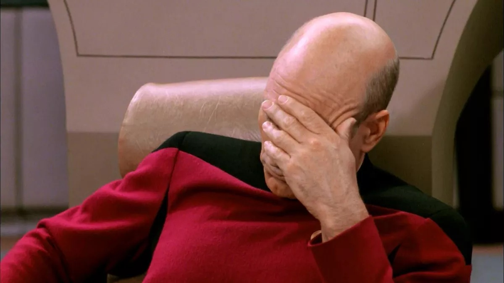

asd
Szántó belebeszélése Maurer ú, ls a szöveget én írom hozzá???sMég egyszer: A bekezfdésben legyen szöveg - randomszöveget tud létrehozni; a szöveg bal oldalán legyen a kép; a kép az eredeti méret 30%-ában jelenjen meg....
